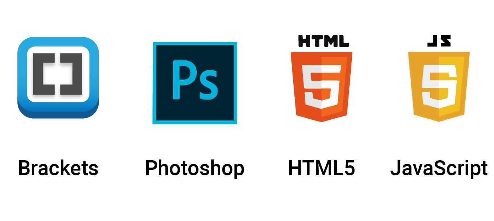
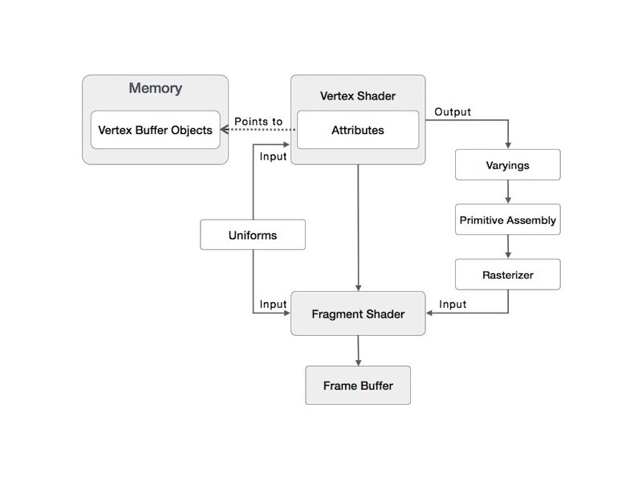

WebGL
Aim for this Project
To create a 3D object using OpenGL and Various Libraries.
Objectives
To code a simple HTML page with a canvas.
To implement a 3D object on this canvas with WebGL.
Go to the finished project here.What is WebGL?
WebGL or Web Graphics Library is the new standard for 3D graphics on the web. WebGL was designed for the purpose of rendering 2D and interactive 3D graphics. It is a JavaScript API that can be used with HTML5. WebGL code is written within the <canvas> tag of HTML5. It is a specification that allows Internet browsers access to Graphic Processing Units (GPUs) on those computers where they were used. (Tutorialpoint.com, 2018)
This was developed by a software engineer named Vladimir Vukicevic, He created the foundation and led the further development of WebGL. WebGL is open source meaning its free to use and develop for. This results in there being countless developers working with WebGL. Today, there is a big WebGL community making plugins and libraries to do all sort of things. Three.js is a very good resource to see what you can do with WebGL. It can be used to make games, visualise data and even make interactive page components. Without the user having to download a program to run!
My starting point
Starting this project, I have a proficient knowledge of JavaScript and HTML5. But other than that, I had no experience using WebGL. I knew WebGL is based off JavaScript Thus making my current knowledge transferable. I knew this is what I want to strive for in my future endeavour thus making this project a great starting point. I was ready to dive into learning this. However, before doing so there is not really a limit on how this aim could be achieved as WebGL can get very complex. Taking this into consideration, from this project I wanted to gain an understanding of how WebGL works.
Tools and technologies used
To get started with WebGL you really don’t need much. It is natively built into modern day browsers such as Firefox, Chrome and Microsoft Edge. So, if you wanted to make something the console would defiantly be an option. The technology involved in making this project come to life was HTML5, JavaScript and gl.Matrix (a WebGL framework). As for the tools I used Brackets as my primary text editor and photoshop to make the texture.
How did i make this?
Coming from only doing front-end development I had to learn the basics of WebGL. I was asking questions such as how does it work? I did some reading around and came across this image of a graphic pipelin
These were the steps that needed to be undertaken to render a 3D object. To initialize webGL I used...(Figure 1)
*Figure 1*
var gl = canvas.getContext("webgl");
And adding fall backs to support older browsers
gl = canvas.getContext("experimental-webgl"); After initialising WebGL, I created some fall backs to tell the user if WebGL has been initialised. This was done through various if statements, during this part previous knowledge of JavaScript really helped. (Figure 2)
*Figure 2*
// adding supports for older browers
if (!gl) {
console.log("Reverting to fallback" );
gl = canvas.getContext("experimental-webgl");
}
// if webgl can not be got send alert
if (!gl) {
window.alert("You need to change browser to view this project") My vertex shade consisted of a lot of elements. I also used a framework called gl.Matrix and what this does is the Math. The attributes I had in this shade what the position of the object and the texture coordinates, the vec3 and vec2 stand for the dimension the attribute is working in. In this case, the texture coordinates are a 2D element. The uniform elements don’t change as they are passed through the shader. Mat4 means there is a 4x4 matrix that is being used. Helpful documentation about this can be found here as this was an external resource. Then giving a position to the element with some calculations. This shader will be passed on to the fragment shader along with other parameters. (Figure 3)
*Figure 3*
var vertexShaderText =
[
'precision mediump float;',
'',
'attribute vec3 vertPosition;',
'attribute vec2 vertTexCoord;',
'varying vec2 fragTexCoord;',
'uniform mat4 mWorld;',
'uniform mat4 mView;',
'uniform mat4 mProj;',
'',
'void main()',
'{',
' fragTexCoord = vertTexCoord;',
' gl_Position = mProj * mView * mWorld * vec4(vertPosition, 1.0);',
'}'
].join('\n');I needed to create a program to bring all the shaders into one place and again adding fall backs incase there was a problem linkning them. (Figure 4)
*Figure 4*
// makiung the program, bringing all the shaders in one peice
var program = gl.createProgram();
gl.attachShader(program, vertexShader);
gl.attachShader(program, fragmentShader);
gl.linkProgram(program);
if (!gl.getProgramParameter(program, gl.LINK_STATUS)) {
console.error("error linking program, something went wrong", gl.getProgramInfoLog(program));
return;
}To plot the cube on the canvas vertices are needed to give the fragment shader to render the object. In this case it will be stored on the ram after it is declared. As webGL can only render in points lines or triangles, this cube will be made of triangles. (Figure 5)
*Figure 5*
// this will be stored on the RAM
var boxVertices =
[ // X, Y, Z U, V
// Top
-1.0, 1.0, -1.0, 0, 0,
-1.0, 1.0, 1.0, 0, 1,
1.0, 1.0, 1.0, 1, 1,
1.0, 1.0, -1.0, 1, 0,
// Left
-1.0, 1.0, 1.0, 0, 0,
-1.0, -1.0, 1.0, 1, 0,
-1.0, -1.0, -1.0, 1, 1,
-1.0, 1.0, -1.0, 0, 1,
// Right
1.0, 1.0, 1.0, 1, 1,
1.0, -1.0, 1.0, 0, 1,
1.0, -1.0, -1.0, 0, 0,
1.0, 1.0, -1.0, 1, 0,
// Front
1.0, 1.0, 1.0, 1, 1,
1.0, -1.0, 1.0, 1, 0,
-1.0, -1.0, 1.0, 0, 0,
-1.0, 1.0, 1.0, 0, 1,
// Back
1.0, 1.0, -1.0, 0, 0,
1.0, -1.0, -1.0, 0, 1,
-1.0, -1.0, -1.0, 1, 1,
-1.0, 1.0, -1.0, 1, 0,
// Bottom
-1.0, -1.0, -1.0, 1, 1,
-1.0, -1.0, 1.0, 1, 0,
1.0, -1.0, 1.0, 0, 0,
1.0, -1.0, -1.0, 0, 1,
];
At the end of the code we need to take all the information and render the object. In the following function, the angle of rotation is being calculated as well as the canvas colour. The textures are also being bound here. Then gl.drawElements tells webGL how to render all the information it received.(Figure 6)
*Figure 6*
var loop = function () {
var angle = performance.now() / 1000 / 6 * 2 * Math.PI;
// parameters output, orignal matrix, angle and what axis you are rotating on
mat4.rotate(yRotationMatrix, identityMatrix, angle, [0, 1, 0]);
mat4.rotate(xRotationMatrix, identityMatrix, angle / 4, [1, 0, 0]);
mat4.mul(worldMatrix, yRotationMatrix, xRotationMatrix);
gl.uniformMatrix4fv(matWorldUniformLocation, gl.FALSE, worldMatrix);
gl.clearColor(0.22, 0.23, 0.22, 1.0);
gl.clear(gl.DEPTH_BUFFER_BIT | gl.COLOR_BUFFER_BIT);
gl.bindTexture(gl.TEXTURE_2D, boxTexture);
gl.activeTexture(gl.TEXTURE0);
gl.drawElements(gl.TRIANGLES, boxIndices.length, gl.UNSIGNED_SHORT, 0
// wont be drawing when no one is look at it
requestAnimationFrame(loop);
};Evaluation
I couldn’t illustrate all of my code, however, if you look at the source file is commented throughout my project on what the elements do. Even so, it took me months to grasp an understanding of WebGL. The demonstrator for something simple is quite complicated under the hood. The points I have illustrated above are key when it comes to making a 3d object but there is a lot more code to it. I recommend going to developer tools and viewing the source.
As of now, I have only been giving WebGL praise, when researching the topic, I had to explore all areas of this technology. The main drawbacks that I see from it would be when rendering something a lot more complicated than a simple object it will drastically affect your computer. Having a low spec computer would make the web pages almost unfunctionally.
I would class this project as a success. From not knowing anything about WebGL to creating a 3D object with a texture. I couldn’t have done it without all the documentation available on the web. Being open source there are a lot of developers writing blogs and tutorials on this topic. Initial aims and objectives were met but I have only turned the first page and I do strive to learn more about WebGL.
Word Count: 946
Refrences:
Mackey, A. (2014) Why you should learn WebGL. Pluralsight.com. [Online] [Accessed on 10 March 2018] https://www.pluralsight.com/blog/software-development/webgl-basics
Overvoorde, A. (n.d.) OpenGL - Textures. Open.gl. [Online] [Accessed on 10 March 2018] https://open.gl/textures
Tutorialspoint (n.d.) WebGL Quick Guide. www.tutorialspoint.com. [Online] [Accessed on 10 March 2018] https://www.tutorialspoint.com/webgl/webgl_quick_guide.htm